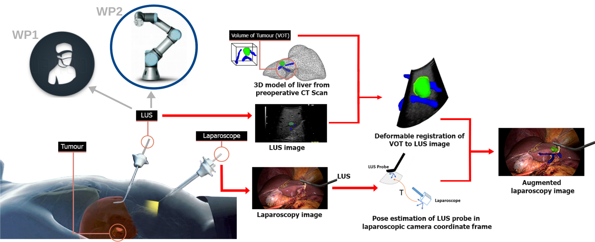

Laparoscopic Liver Resection (LLR) is less traumatic than open surgery, leading to faster recovery and lower healthcare costs. However, its adoption remains limited due to three key challenges.
First, controlling intraoperative bleeding with laparoscopic instruments demands advanced technical skills. Second, surgeons cannot manually palpate the liver, making tumour and resection margin localisation difficult. This risks inadequate resection — removing too much healthy tissue or leaving cancerous tissue behind. Third, laparoscopic ultrasonography (LUS), the only tool for real-time subsurface imaging, has a steep learning curve.
Augmented reality (AR)-based methods using preoperative data have been proposed to assist LLR. They predict tumour locations by overlaying preoperative data onto laparoscopic images. Early methods were neither real-time nor automatic. More recent methods achieve both, but rely on surface landmarks to extrapolate tumour location. This makes them insufficiently accurate for subsurface targets.
This project aims to enable accurate, automatic, and real-time AR guidance during LLR. It will combine intraoperative LUS probe measurements — controlled by a robot — with preoperative data, then overlay the result onto laparoscopic images. Unlike surface-based methods, it directly targets subsurface tumour localisation with the help of LUS measurements.